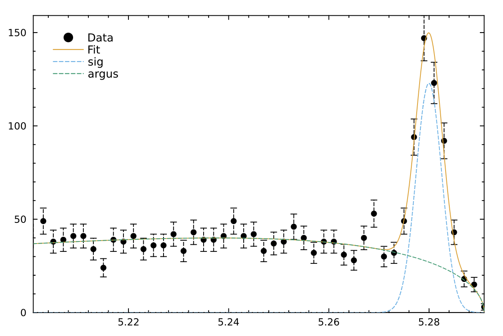

Julia bindings for Minuit2
Description
Julia bindings for the Minuit2 minimization package. It provides a Julia-friendly interface to the C++ library, maintained by CERN's ROOT team. Minuit2 is designed for function minimization, particularly in statistical applications such as maximum-likelihood estimation and least-squares fitting. It computes best-fit parameters and error estimates using likelihood profile analysis
The API and additional features of this package are heavily inspired by iminuit, which offers a Python-friendly interface to the same library.
We have provided an additional module Minuit2.RooFit with an initial implementation in Julia of the RooFit modeling package often used in HEP data analysis. This package can help to build complex PDF models using basic elements and combining them.
Installation
The Minuit2.jl package does no require any special installation. Stable releases are registered into the Julia general registry, and therefore can be deployed with the standard Pkg Julia package manager.
julia> using Pkg
julia> Pkg.add("Minuit2")API Guidelines
A mutable Minuit structure instance is constructed from the cost function to be minimised and its gradient, if available, otherwise Minuit2 uses an internal numerical differentiation, and a number of initial parameters. This structure is later used in the application to perform different minimization algorithms with different strategies and the evaluation of the results. The user provides always a Julia cost function to be evaluated by the C++ engine as a callback.
Getting Started
julia> using Minuit2
julia> rosenbrock(x, y) = (1 - x)^2 + 100 * (y - x^2)^2
rosenbrock (generic function with 1 method)
julia> m = Minuit(rosenbrock, x=0, y=0, tolerance=1e-4)
Minuit(FCN = rosenbrock(x, y), X0 = [0, 0], Method = migrad)
julia> migrad!(m)
┌──────────────┬──────────────┬───────────┬────────────┬────────────┐
│ FCN │ Method │ Ncalls │ Iterations │ Up │
│ 1.68596e-8 │ migrad │ 146 │ 19 │ 1.0 │
├──────────────┼──────────────┼───────────┼────────────┼────────────┤
│ Valid Min. │ Valid Param. │ Above EDM │ Call limit │ Edm │
│ true │ true │ false │ false │ 1.68793e-8 │
├──────────────┼──────────────┼───────────┼────────────┼────────────┤
│ Hesse failed │ Has cov. │ Accurate │ Pos. def. │ Forced │
│ false │ true │ true │ true │ false │
└──────────────┴──────────────┴───────────┴────────────┴────────────┘
┌──────┬──────────┬─────────────┬────────┬────────┬────────┬────────┬───────┐
│ Name │ Value │ Hesse Error │ Minos- │ Minos+ │ Limit- │ Limit+ │ Fixed │
├──────┼──────────┼─────────────┼────────┼────────┼────────┼────────┼───────┤
│ x │ 0.999952 │ 1.00372 │ │ │ │ │ │
│ y │ 0.999892 │ 2.00986 │ │ │ │ │ │
└──────┴──────────┴─────────────┴────────┴────────┴────────┴────────┴───────┘
julia> minos!(m)
┌──────────────┬──────────────┬───────────┬────────────┬────────────┐
│ FCN │ Method │ Ncalls │ Iterations │ Up │
│ 1.68596e-8 │ migrad │ 146 │ 19 │ 1.0 │
├──────────────┼──────────────┼───────────┼────────────┼────────────┤
│ Valid Min. │ Valid Param. │ Above EDM │ Call limit │ Edm │
│ true │ true │ false │ false │ 1.68793e-8 │
├──────────────┼──────────────┼───────────┼────────────┼────────────┤
│ Hesse failed │ Has cov. │ Accurate │ Pos. def. │ Forced │
│ false │ true │ true │ true │ false │
└──────────────┴──────────────┴───────────┴────────────┴────────────┘
┌──────┬──────────┬─────────────┬───────────┬─────────┬────────┬────────┬───────┐
│ Name │ Value │ Hesse Error │ Minos- │ Minos+ │ Limit- │ Limit+ │ Fixed │
├──────┼──────────┼─────────────┼───────────┼─────────┼────────┼────────┼───────┤
│ x │ 0.999952 │ 1.00372 │ -0.999952 │ 1.00005 │ │ │ │
│ y │ 0.999892 │ 2.00986 │ -1.03349 │ 3.00136 │ │ │ │
└──────┴──────────┴─────────────┴───────────┴─────────┴────────┴────────┴───────┘
julia> x, y = m.values
[0.9999518621622189, 0.9998916674647496]
julia> ex, ey = m.errors
[1.0037197729944198, 2.009856810740231]Minuit2.RooFit module
This is simple example of the functionality of the Minuit2.RooFit module provided additionally to this package.
#---Observable
mes = RealVar(:mes, limits=(5.20, 5.30), nbins=50)
#---Gaussian signal
sigmean = RealVar(:sigmean, 5.28, limits=(5.20, 5.30))
sigwidth = RealVar(:sigwidth, 0.0027, limits=(0.001, 0.1))
sig = Gaussian(:sig, mes, sigmean, sigwidth)
#---Build Argus background
argpar = RealVar(:argpar, -20.0, limits=(-100., -1.))
argus = ArgusPdf(:argus, mes, ConstVar(:m₀, 5.291), argpar)
#---Build the model
nsig = RealVar(:nsig, 200., limits=(0., 10000.))
nbkg = RealVar(:nbkg, 800., limits=(0., 10000.))
model = AddPdf(:model, [sig, argus], [nsig, nbkg])
#--- Generate a toyMC sample from composite PDF ---
data = generate(model, 2000)
#--- Perform extended unbinned NLL fit ---
m = fitTo(model, data)
#--- Visualize the results
visualize(m, model, components=(:sig, :argus); nbins=50, linestyle=:dash, legend=:topleft)
Examples
Some notebooks are provided as examples. They are located in directory examples. They can be run using Julia to launch the notebook or jupyterlab.
julia --project=Minuit2.jl/examples
julia> ]instantiate
julia> installkernel("Julia", env=Dict("JULIA_PROJECT" => "@."))
julia> jupyterlab(dir="Minuit2.jl/examples")introduction.ipynb
Basic introduction to minimization with Minuit using simple Julia functions and exercising the plotting capabilities.
costfunction.ipynb
Introduction of the provided cost functions for a typical HEP minimization problem.
combined.ipynb
A quick guide on how to combined several fits into a single one using the Minuit2 package.
roofit.ipynb
A quick guide on how to use the RooFit module to perform fits.
Tests
Unit tests can be run with julia --project=. test/runtests.jl
Roadmap
There are a number of issues and problems still to be resolved. We keep track of them in this list:
- Weighted histograms need to be implemented
- More tutorials:
- Automatic differentiation
- Benchmarks (fit quality and performance)
- More in RooFit module
- Complete the available PDFs (e.g. RooBCPEffDecay, RooBMixDecay, RooBifurGauss, RooBreitWigner, RooCBShape, RooPolynomial, etc.)
- More compositions (e.g. multiplication, composition and convolution)